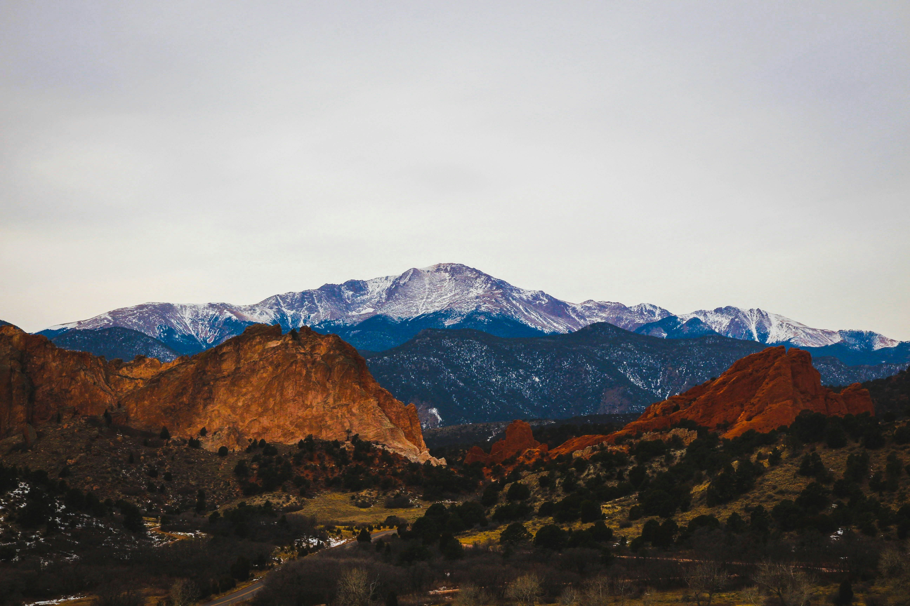

Welcome to Colorado Springs
As America's Olympic City, Colorado Springs represents the pinnacle of athletic excellence and military pride. With our population approaching half a million residents and spanning 195 square miles, this rapidly growing city offers something truly unique. From training world-class athletes at the Olympic & Paralympic Center to educating future Air Force leaders, Colorado Springs combines natural beauty with innovation. Our thriving tourism and healthcare sectors, alongside our strong military presence, make Colorado Springs not just a destination, but a city that's actively shaping Colorado's future.
City Statistics
- Population: 488,664
- Founded: 1871
- Region: Central Colorado, Pikes Peak Region
- Classification: Suburban
- Average Income: $79,026/year (5% below state average)